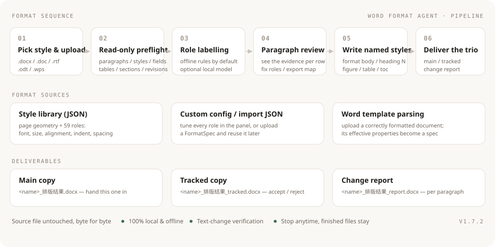

Turn a messy Word draft
into something you can hand in
Upload a document and the workbench runs a read-only preflight, labels every paragraph
(heading / body / signature / date / caption / cover / TOC…), lets you fix the labels, then produces a
main copy, a tracked copy and a change report.
Multi-chapter projects can be processed in one batch — all on your own machine, offline, with the source file untouched.
- Per-paragraph role labelling
- Formatting lives in named styles
- Main / tracked / change report
- Batch mode · one-click zip

What it solves
What it solves
One pipeline covers "messy formatting", "manual fixing by hand" and "deliverables that can be reviewed".
Per-paragraph role labelling
Headings, body text, signature, date, captions, cover, TOC… each row shows the evidence (numbering convention, outline level, named style, position in the document) and can be corrected by hand.
Formatting stored in named styles
The output is not hard-formatted: change "format body" or "format heading 2" once in Word's style pane and the whole document follows.
Three deliverables
Hand in the main copy; review the tracked copy with Word's accept/reject workflow; check the change report paragraph by paragraph.
Text is verified unchanged
Text before and after is compared; if body or protected stories differ, the run fails and nothing is written.
Multi-chapter batches
Cover/TOC plus every chapter processed in one go — each file stays independent: no merging, no page renumbering, results grouped by type.
Stoppable at any time
"Force stop" halts at the next checkpoint: finished files are still delivered and the task gate is released immediately.
Screens
Screens
A local workbench (bound to 127.0.0.1 only) — everything happens in your browser.


Pipeline
Pipeline
Six deterministic stages; only "role labelling" can optionally call a local model.

- Pick a style and upload:
.docx/.doc/.rtf/.odt/.wps— the last four are converted with the local Word / WPS. - Read-only preflight: body, headers and footers, footnotes, text boxes, tables, sections, fields and revisions; structures that are kept but not re-flowed are listed.
- Role labelling: offline rules by default (numbering conventions, outline levels, named styles, position); an optional local model can help with tricky paragraphs and falls back automatically when unreachable.
- Paragraph review: only non-body paragraphs are listed by default; filter, search, correct roles, and export the role map for reuse.
- Write named styles: page geometry, headers/footers, TOC, tables and captions are applied consistently; the first level-1 heading is not pushed to a new page and the cover block is left untouched.
- Deliver the trio: TOC / page-number fields are refreshed when Word is free, otherwise they are flagged to update on open.
Batch
Batch mode (a whole project at once)
Multi-select or import a folder in the browser, drop a folder onto the executable, or use the CLI.
Multi-select in the browser
Pick several files or import a folder, confirm the list and hit "start batch" — it runs straight through.
Drag & drop or CLI
Drop a folder onto 批量排版.bat or the exe, or run exe --batch <dir>.
Grouped output
Every file stays independent — no merging, no page renumbering — and the whole batch can be downloaded as one zip.
_排版结果_<timestamp>/ 主稿/ <name>_排版结果.docx (main copy) 修订稿/ <name>_排版结果_tracked.docx (tracked copy) 报告/ <name>_排版结果_report.docx (change report) 批量汇总.md / 批量汇总.csv (batch summary: table + manual-check list)
Per-file Markdown reports and converted .doc files are process artifacts and are kept out of the result folder.
Under the hood
Under the hood
Engine
Python 3.14 + python-docx, editing OOXML directly (styles, paragraphs, fields, sections, revisions). It reads effective properties and writes named styles — no string surgery.
Interface
A plain HTML/CSS/JS workbench bound to 127.0.0.1; tasks run serially and stream their progress live.
Packaging
PyInstaller (onedir). The distributed build ships bytecode only, with every key left blank for the user to fill in.
Quality
189 self-tests (unit + end-to-end, including a real large document) plus seven version acceptance scripts; text-change verification guards every run.
FAQ
FAQ
Click a question to expand it (same items as the cheat-sheet card).
Why did the page count change after formatting?
Expected. The template body text is SimSun 12 pt with a minimum line spacing of 26 pt — change the font size or the spacing and the pagination changes with it.
Why are heading styles called "format heading 1" instead of "Heading 1"?
"Heading 1" collides with Word's built-in style: when Word saves after refreshing fields it renames the custom style to "Heading 11 / 21 / 31" and swaps its style ID, so the style table keeps growing. With "format heading N" both the name and the ID stay stable — and the formatting still lives in the style, so one edit updates the whole document.
Headers and footers were not changed — why?
On purpose. The template's header carries that project's name; copying it into another document would be wrong.
To migrate header text, configure page.section_overrides for the target document's sections.
The TOC page numbers are wrong when cover/TOC is a separate file
If the cover and TOC live in their own file, the TOC field in that file cannot resolve the chapter page numbers. The tool detects this, skips the refresh and keeps the existing TOC, and lists the file under "needs manual check" in the batch summary — refresh the TOC in the merged document or check it by hand.
A heading was labelled incorrectly
Correct its role in the review table; for documents of the same kind, export the role map and apply it on the next upload.
The fonts look different on a colleague's machine
Deliverables rely on the local installation of Chinese fonts (SimHei, SimSun, FangSong_GB2312 …). Install the same font set on every machine, otherwise Word substitutes them.
"A task is already running"
Tasks run one at a time: wait for the current run to finish (this avoids file and Office process conflicts). For big documents you can also use "force stop": it halts at the next checkpoint and keeps finished files.
Changelog
Release history
| Version | Highlights |
|---|---|
| V1.6.0 | Fixed footer page numbers being reported as non-SimSun (a header/footer paragraph could not see docDefaults); self-tests 189/189 green |
| V1.5.0 | Heading styles renamed to "format heading 1–5", ending Word's renaming and style accumulation; table-caption digits back to Times New Roman |
| V1.4.9 | Batch results split into 主稿 / 修订稿 / 报告 folders; process files moved out of the result folder; TOC refresh skipped when body chapters live elsewhere |
| V1.4.7 | Batch formatting in the browser (multi-select files / import a folder) |
| V1.4.0 | Cover / inner cover / signature page / TOC support: cover protected, TOC normalised, front matter sectioned automatically |